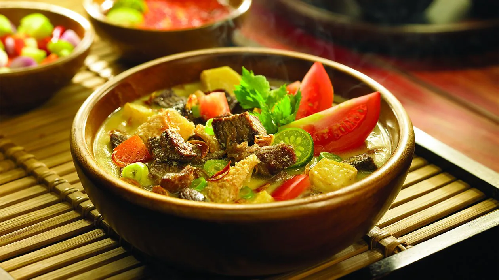
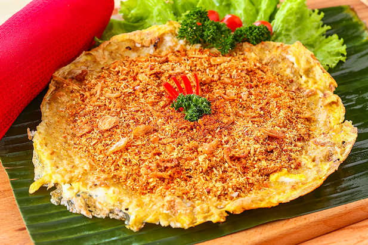
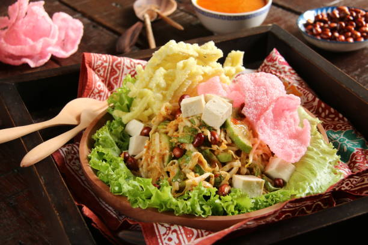
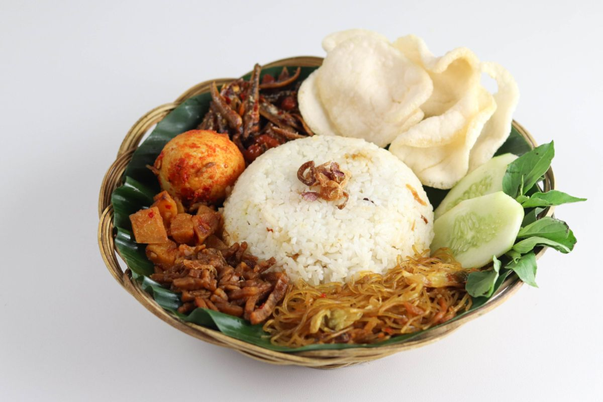
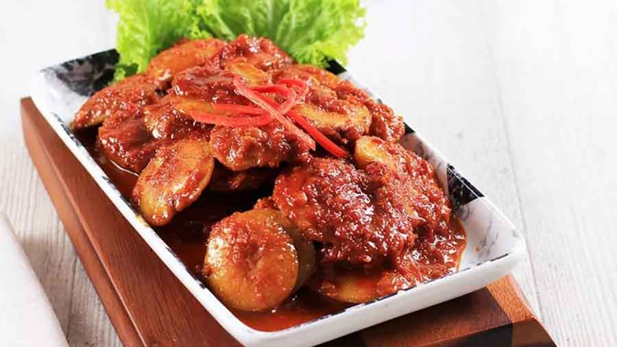

6 Menu Makanan Utama Khas Jakarta 🏙️

Soto Betawi
Soto khas Betawi dengan kuah santan dan susu, gurih dan creamy.
Bahan-bahan:
- 500 gr daging sapi (sandung lamur/campuran jeroan)
- 200 ml santan
- 200 ml susu cair
- 5 siung bawang putih
- 7 siung bawang merah
- 2 cm jahe dan lengkuas, memarkan
- 2 batang serai, memarkan
- 2 lembar daun salam & 3 daun jeruk
- Garam, merica, kaldu bubuk secukupnya
- Tomat, emping, dan bawang goreng untuk pelengkap
Cara membuat:
- Rebus daging hingga empuk, tiriskan lalu potong-potong.
- Tumis bumbu halus dan rempah hingga harum, masukkan ke rebusan.
- Tambahkan santan dan susu, aduk perlahan agar tidak pecah.
- Masak hingga bumbu meresap, koreksi rasa.
- Sajikan hangat dengan nasi, emping, dan sambal.

Kerak Telor
Telur bebek, ketan, dan ebi khas Betawi yang dimasak sampai kering dan gurih.
Bahan-bahan:
- 100 gr beras ketan putih, rendam 2 jam
- 1 butir telur bebek
- 1 sdm ebi, rendam lalu sangrai
- 2 sdm kelapa parut sangrai
- 1/2 sdt merica dan garam
- Minyak secukupnya
Cara membuat:
- Panaskan wajan anti lengket, beri sedikit minyak, tuang ketan, ratakan.
- Kocok telur, campur ebi, kelapa, merica, dan garam, tuang di atas ketan.
- Masak dengan api kecil hingga kering di bagian bawah.
- Angkat dan sajikan hangat.

Asinan Betawi
Sayur segar disiram kuah kacang asam pedas khas Betawi.
Bahan-bahan:
- Kol, tauge, sawi asin, mentimun, selada (iris-iris)
- 100 gr kacang tanah goreng
- 3 cabai merah
- 2 sdm cuka, 1 sdm gula merah
- Garam secukupnya, air matang
- Kerupuk dan kacang goreng untuk topping
Cara membuat:
- Haluskan kacang, cabai, gula, garam, cuka dan beri air secukupnya hingga menjadi kuah asinan.
- Susun sayuran di piring, siram kuah asinan.
- Taburi kerupuk dan kacang goreng.

Nasi Uduk Betawi
Nasi gurih yang dimasak dengan santan dan rempah, harum dan lezat.
Bahan-bahan:
- 2 gelas beras, cuci bersih
- 400 ml santan
- 2 batang serai, 2 daun salam, 2 daun jeruk
- 1 sdt garam
Cara membuat:
- Masak semua bahan dalam panci sampai setengah matang.
- Masukkan ke dalam kukusan, kukus hingga matang dan pulen.
- Sajikan dengan telur, tempe orek, dan sambal kacang.

Semur Jengkol
Jengkol dimasak dalam kuah kecap kental berbumbu khas Betawi.
Bahan-bahan:
- 500 gr jengkol, rebus dan geprek
- 5 bawang merah, 3 bawang putih
- 3 sdm kecap manis
- 1 sdt ketumbar, pala bubuk, merica
- Air secukupnya
Cara membuat:
- Tumis bumbu halus sampai harum.
- Masukkan jengkol, tambahkan air, kecap, dan bumbu lainnya.
- Masak hingga air menyusut dan bumbu meresap.
Laksa Betawi
Laksa dengan kuah santan kental dan isi bihun, telur, dan oncom.
Bahan-bahan:
- 200 gr bihun, seduh air panas
- 200 ml santan
- 1 papan oncom, haluskan
- 5 bawang merah, 3 bawang putih
- 2 cm kunyit, 2 cm lengkuas, 1 serai
- Telur rebus dan kemangi
Cara membuat:
- Tumis bumbu halus dan rempah hingga harum.
- Masukkan oncom, santan, dan sedikit air.
- Masak hingga matang, sajikan dengan bihun, telur, dan kemangi.